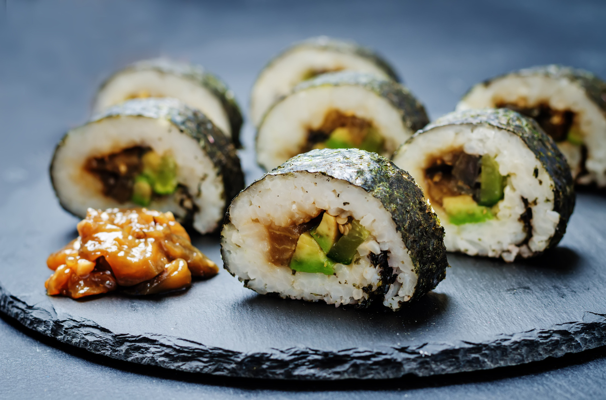
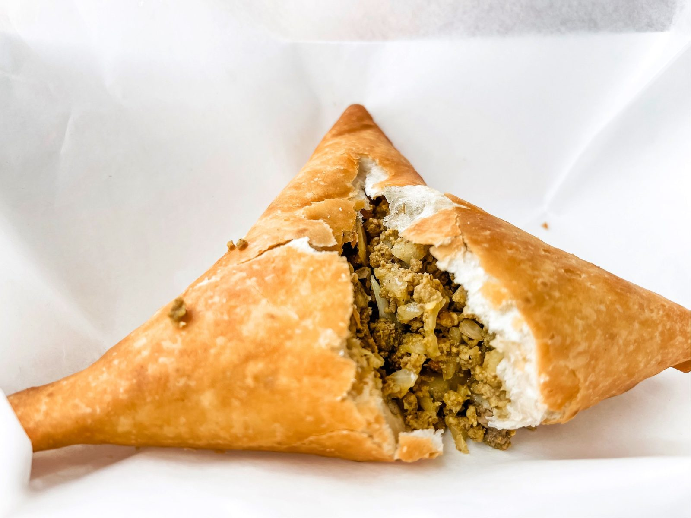
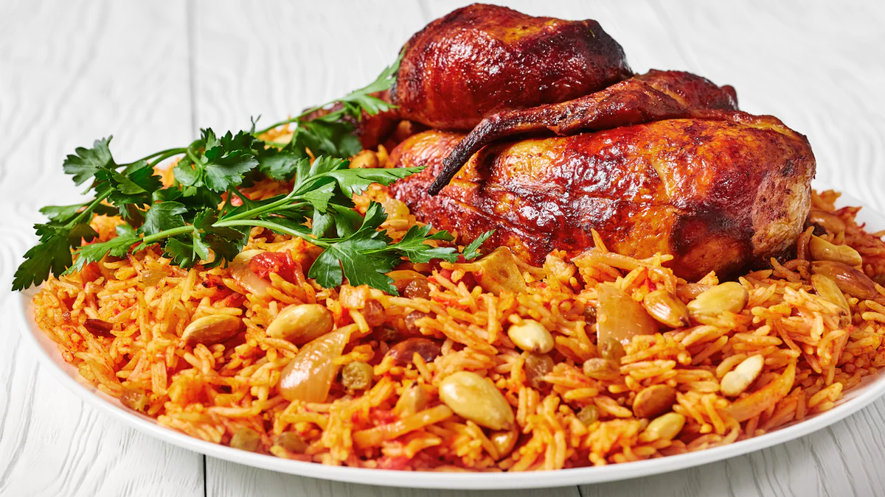
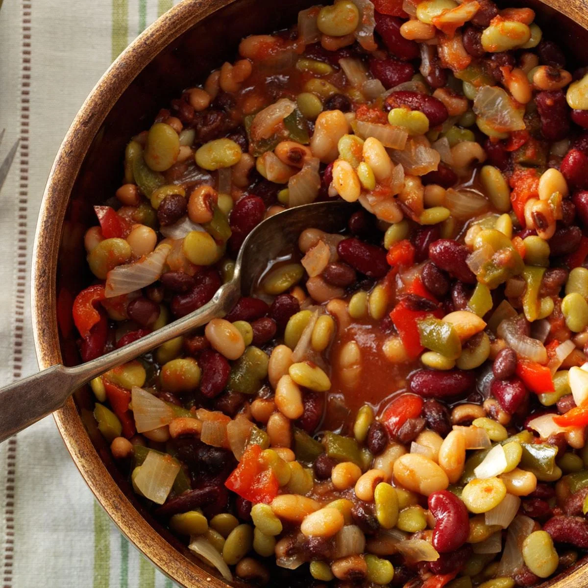

Some of Nora's Favourite Foods
This is some of Nora's favourite food from around the world and their recipes

Sushi

Sambusa

Chicken Kabsa
Grape Leaves
Spaghetti
Chicken Soup

Beans
Some Recipes of These Foods:
How to make Sushi at home
Yummy Sambusa
Homemade Chicken Soup
Famous Stuffed Grape Leaves
Saudi Chicken Kabsa
Homemade Delicious Spaghetti
How to Cook Dry Beans
Go back to the home page